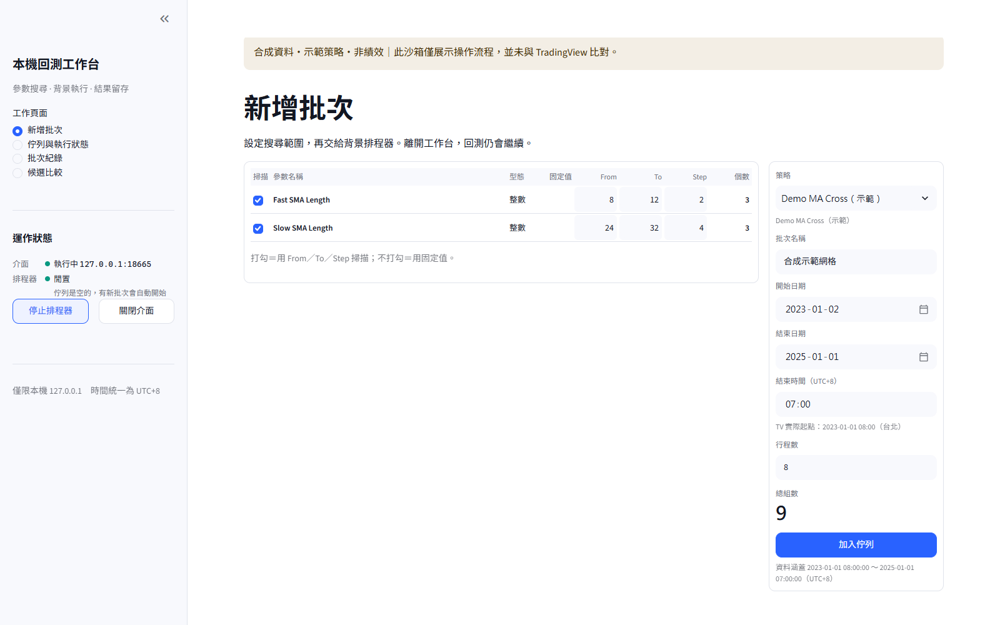
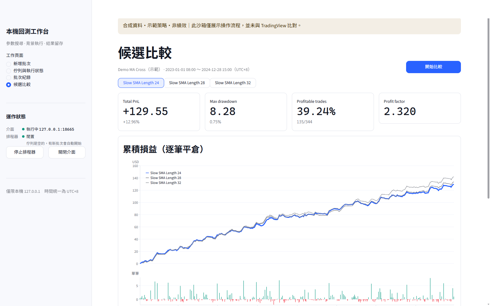

Local-Backtest ／ 本機回測工作台
在自己的電腦跑參數網格，再逐筆核對結果。
把交易策略搬到 Windows 本機回測，用介面排批次、背景執行，並和 TradingView 的交易清單逐筆比對，確認本機算出來的結果可以信任。
我想解決的問題
我原本靠 TradingView 跑大量參數組合，但平台卡住或批次中斷時，整個篩選流程就停下來。我需要一個能在自己電腦上跑、而且能證明結果和 TradingView 一致的替代方案。
原本 vs 現在
| 環節 | 原本 | 現在 |
|---|---|---|
| 跑參數網格 | 只靠 TradingView 批次，卡住或中斷就停 | 在本機介面設定範圍、排進佇列，背景排程器依序執行 |
| 結果可不可信 | 只有 TradingView 的結果，沒有第二份可以對照 | 新策略要先和 TradingView 逐筆比對，通過才放進介面；介面和排程器分開，關掉介面回測仍會繼續 |
決策與原因
策略不用自動轉換工具，而是照固定流程逐行翻譯，再拿 TradingView 匯出的 K 棒和交易清單驗證。比對不只看總損益，而是逐筆對進出場時間、方向和出場原因；原因沒查清楚的差異交給我判斷，不調參數湊數字。
成果
目前介面可選 5 支通過驗證的策略，支援單組回測、平行網格搜尋、中斷續跑、候選比較與逐筆比對。網格結果輸出成 CSV，直接接到我的參數篩選流程。
還沒解決的事
每月更新行情資料的流程還沒實測。另外，回測區間結束時如果還有未平倉的交易，部分統計會不正確；目前的做法是先確認期末沒有未平倉，工具本身沒有修正。
這次展示的選擇
右側是工具的實際畫面，但在隔離的副本裡執行：用固定亂數產生的合成 K 棒，搭配一支公開的雙均線示範策略，不是我的策略。畫面裡的數字只是示範，不是績效，也沒有和 TradingView 比對。


我負責定義要解決的問題、驗收標準與比對規則，閱讀差異證據後做裁決。
AI Agent 協助撰寫程式、依規則翻譯策略、整理比對證據。
目前界線：工具只在 Windows 本機執行，不在雲端回測，也不下單。公開展示不含真實行情、我的策略名稱、參數、績效或交易紀錄。